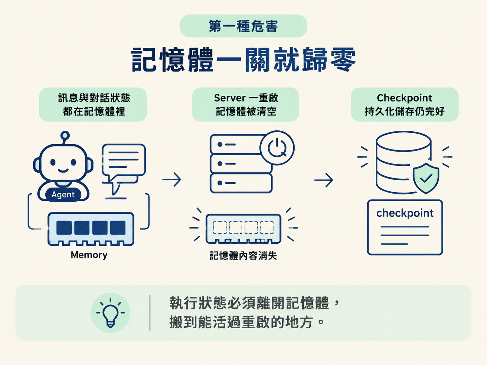
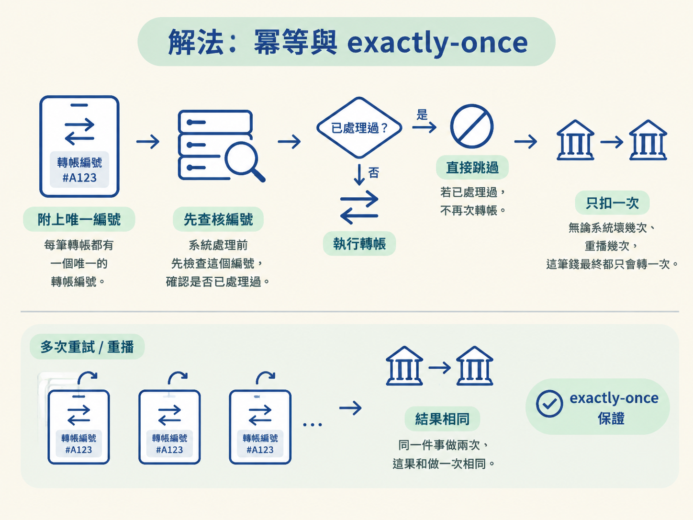

agent 跑了半天，正準備回覆使用者或執行轉帳，server 卻突然重啟。它醒來後不知道剛才做到哪裡，也無法判斷那個動作到底有沒有成功。
這時直接重跑看似合理，卻可能把同一封訊息寄兩次，甚至把同一筆錢轉兩次。這一節要釐清兩個問題：狀態為什麼不能只放在記憶體裡，以及不可逆的動作為什麼一定要具備冪等性。
你會看懂兩個具體危害：訊息全放在記憶體裡，重啟後會全部消失；send_reply、轉帳這類不可逆動作一旦重跑，就可能重複產生副作用。
接著用冪等（idempotency）與 exactly-once 語意，理解為什麼不可逆動作必須設計成「只生效一次」。
回到目前的 runtime loop。每個 agent 的訊息、對話與狀態，全都放在記憶體（in-memory）裡。
記憶體像是寫在白板上的工作進度：process 一重啟，白板被擦乾淨，agent 就對「剛剛發生過什麼」一無所知。
對使用者來說，這不只是短暫卡頓。你可能等 agent 跑了半天，某個環節出錯，或 server 只是例行重啟；agent 醒來後卻完全不記得你交代過什麼，也不知道自己已經做到哪裡。整段進度會憑空蒸發。
因此，durable execution 的第一個動機很直接：把執行狀態從記憶體搬到能活過重啟的地方。這正是上一節 checkpointing 要落地解決的問題。

agent 不只會「想」，也會出手做事情。其中有些動作一旦完成，就沒有可靠的 undo，課程把它稱為 destructive action（破壞性／不可逆動作）。
看兩個場景：
場景一：send_reply 發出到一半，系統壞了。訊息到底寄出沒？你不知道，於是再跑一次，結果同一封信被寄了兩次。
場景二：轉帳轉到一半，系統壞了。你又跑一次，結果錢被轉了兩次。
問題在於，你不能假設這些動作可以事後復原。訊息已經寄出，就沒辦法把手伸進別人的信箱，在對方打開前把信抽回來；轉帳也是一樣。
只要重跑會再次產生副作用，系統就可能重複寄信或重複扣款。對不可逆動作來說，這種重複不是小瑕疵，而可能直接造成災難。
面對不可逆動作，不能只祈禱系統不要出錯。要在結構上保證：即使失敗後重跑，也不會讓結果重複。
這會用到分散式系統裡的兩個概念：
| 概念 | 白話 | 它保證什麼 |
|---|---|---|
| idempotency（冪等） | 同一件事做兩次，結果和做一次相同 | 動作重跑是安全的 |
| exactly-once（恰好一次） | 整個系統最後只產生一次效果 | 不會被重複觸發 |
兩者的關係是：exactly-once 靠冪等的 step 堆出來。
如果每個動作本身都具備冪等性，多跑一次也會得到相同結果，那麼即使失敗重試，甚至整個 workflow 被重播，最後效果仍然像是只做了一次。
反過來，如果動作不具備冪等性，就無法可靠地保證 exactly-once。因為只要發生重試，副作用就可能再次發生。
以轉帳為例：可以為每筆轉帳附上一個唯一的轉帳編號。系統處理時先檢查這個編號；如果發現已經處理過，就直接跳過，不再次轉帳。這樣一來，無論系統壞幾次、重播幾次，這筆錢最終都只會轉一次。

不可逆的動作，必須冪等；冪等，才談得上 exactly-once。
把因果鏈記成一句話：動作不可逆 → 不能直接重跑 → 必須冪等 → 冪等才能支撐 exactly-once。
下一節選 DBOS 時會直接用到這個原則：DBOS 要求你把 runtime 包成「具備冪等性的 step」，讓失敗重播時能安全地跳過已經完成的步驟。